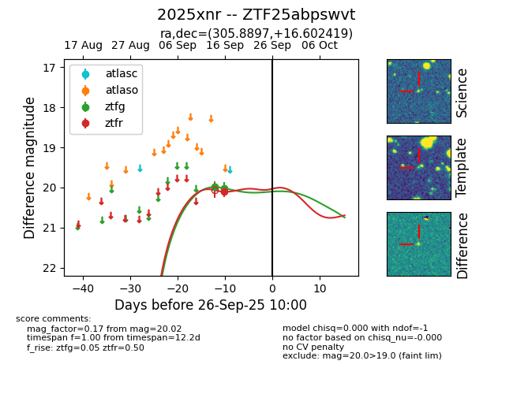

FINK: ZTF25abpswvt
Lasair: ZTF25abpswvt
ALeRCE: ZTF25abpswvt
TNS: 2025xnr
YSE: 2025xnr
ZTF25abpswvt (ztf,fink)
2025xnr (tns,yse)
equatorial (ra, dec) = (305.8897,+16.60242)
galactic (l, b) = (58.6742,-11.73442)

last ztfg=20.02, ztfr=20.11
2 ztfg, 1 ztfr detections